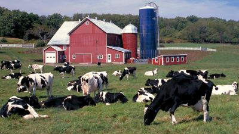
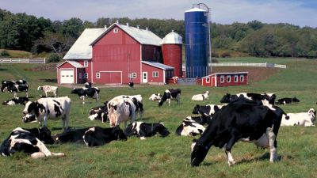

Bienvenido al directorio de servicios para trabajadores agrícolas, un directorio estatal de recursos, en inglés y español, para trabajadores agrícolas e inmigrantes en todo el estado de Nueva York.
La información de este directorio fue obtenida en abril de 2020, pero hay cambios frequentes. Por favor, contacte a cada organización para obtener y verificar que la información sea lo más acutalizada antes de viajar a su ubicación.